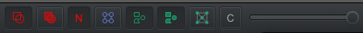

FAQ and other Errors
I can't see any ROIs or model predicted objects?
You may accidentally have annotation/detection display toggled to hidden. Use the buttons in the center of the tool bar to adjust object visibility. Alternatively, press A to toggle visibility for annotations, and press D to toggle visibility for detections. Shift+F/F to toggle fill for annotations/detections.
The following viewer configuration is recommended:

Request timed out
The server deployment is serverless, which means it just turns on when it receives a request, and goes back to sleep otherwise. We do this to save on the bill, but it can lead to some weird state behavior. If a retry fails, just delete the ROI and remake it.
I don't have the option to choose all classifications / the Annotations tab only shows some classes.
The available class list is managed by QuPath. Any class can exist, but you only use the ones set in the
QuPath viewer. Navigate to the left sidebar, and find the Class list under the Annotations
tab. Use the + button to add a missing class to the list, or select a class and use the
- button to remove it (this does not delete objects of that class). For accurate metrics,
please only use classes with the same names as those of objects predicted by the modules (they should
color match if they are the same).
My annotations disappeared when I ran a different module!
By design. At the moment, modules are designed to be used separately. This includes metrics as well. It's recommended to do the project workflow with one module at a time.